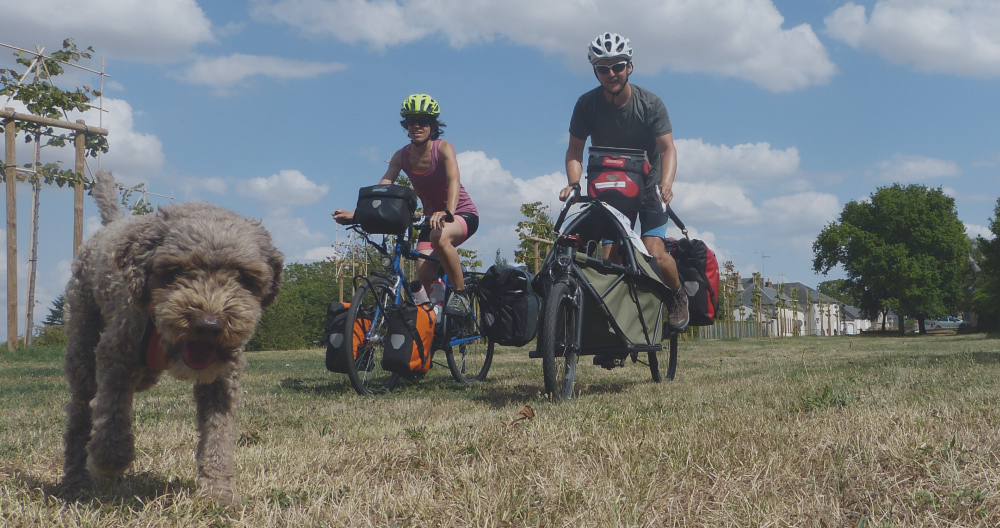
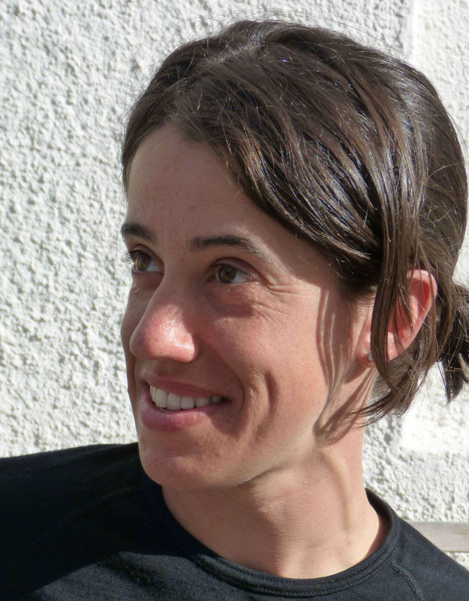
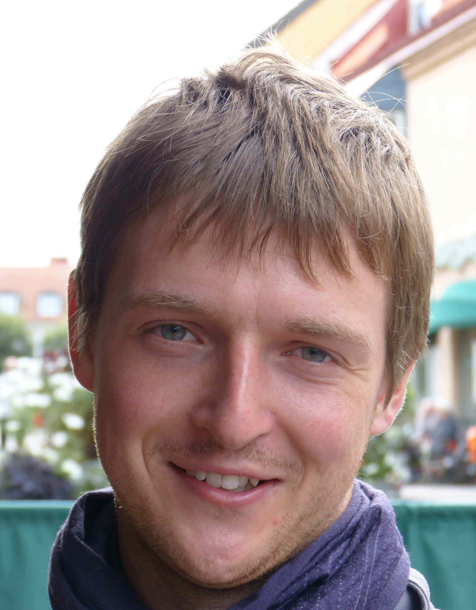
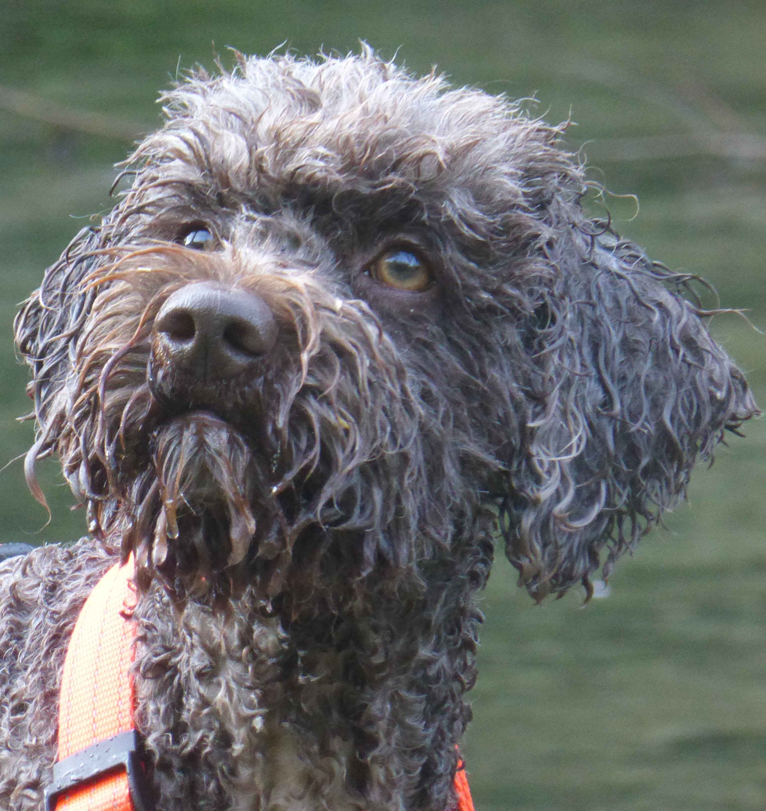

<section id="about-us">
  <div class="container">
    <div class="row border">
      <div class="col-md-12">
        
        <div id="about-us-slider" class="block slider">
          
          <div class="centered">
            <h1 class="text-uppercase">{{ page.title}}</h1>
            <br>
            {% if page.subtitle %}
            <h4>{{ page.subtitle }}</h4>
            {% endif %}
          </div>
        </div>
        <!--This code below is valid only for very small screens-->
        <div class="slider-below block">
          <h1 class="text-uppercase center-block" style="color:#E4B363;">{{ page.title}}</h1>
          <br>
          {% if page.subtitle %}
          <h4 class="center-block" style="color:#E4B363;">{{ page.subtitle }}</h4>
          {% endif %}
        </div> 

        <!--Arianna-->
        <div id="arianna" class="block"> 
          <h2 class="text-uppercase center-block">Arianna Casiraghi</h2>
        </div>

        <div id="arianna-img">
          
        </div> 

        <div id="arianna-txt">
          <p class="center-block">I have enjoyed cycling almost all my life, or at least as soon as I learnt to push myself along on a baby tricycle. As a child, I spent countless weekends and summer holidays pedalling along the beautiful paths around lake Orta with my mountain bike.</p> 
          <p class="center-block">Later, whilst studying at university, cycling became more than a fun activity - it became my favourite transport means and an integral part of my life, something I would increasingly identify myself with.</p>
          <p class="center-block">In those years I also discovered cycletouring and fell in love with every aspect of it: from the sense of adventure and freedom, to the feeling of embracing nature and cultures at a slow pace as well as connecting with people in a more authentic way. Since then, I have cycled over 12000 km across 18 countries, mostly during summer holidays, and commuted to work by bike as much as I could, even through the harsh Finnish winters.</p>
          <p class="center-block">After a PhD in Physics and 6 years of research in nanomagnetism and spintronics, I am taking a long break from my job starting from July 2019 to pursue the dream of travelling more by bike.</p>
          <p class="center-block">This time however, shaken by the urgency of taking action against climate and environmental breakdown, cycletouring is not just for pleasure - it is an opportunity to <a class="green" target="_blank"  href="index.html">raise awareness about cycling as a viable transport alternative to cars.</a></p>
        </div>

        <!--Daniel-->
        <div id="daniel" class="block"> 
          <h2 class="text-uppercase center-block">Daniel Rayneau-Kirkhope</h2>
        </div>

        <div id="daniel-img">
          
        </div> 

        <div id="daniel-txt">
          <p class="center-block">My first memory of cycling was that of being pushed down a hill by my sister without fully understanding how brakes worked. It was not love at first sight, but once the swelling subsided, my relationship with the bike improved. My first cycletouring holiday was with that same sister some 10 years later: we drank more wine than we covered kilometres, but that trip planted the seed for future enjoyment.</p> 
          <p class="center-block">While at university, I worked part-time as a motorcycle mechanic, a wonderful practical antidote to studying theoretical physics. After completing my PhD in structural physics, I spent 6 years doing research work in structural mechanics and bio-inspired design. During this period, I also took courses in metal work and bicycle fabrication.</p>
          <p class="center-block">I have recently moved away from academic work and started designing and building bicycles (see my website at: <a class="green" target="_blank"  href="https://drkcycles.com">www.drkcycles.com</a>). I believe this is something that can help more people fall in love with cycling and help solve some of the problems within society. 
          <p class="center-block"><a class="green" target="_blank"  href="index.html">Our trip</a> for me has many motivations: trying to raise awareness of the good that travelling on two wheels can do, personal enjoyment of cycletouring, but also it serves as a serious test ride of <a class="green" target="_blank"  href="https://drkcycles.com/#bicycles">my latest cargo bike design</a>.</p> 
        </div>

        <!--Zola-->
        <div id="zola" class="block"> 
          <h2 class="text-uppercase center-block">Zola</h2>
        </div>

        <div id="zola-img">
          
        </div> 

        <div id="zola-txt">
          <p class="center-block">I am a <a class="green" target="_blank"  href="https://en.wikipedia.org/wiki/Lagotto_Romagnolo">Lagotto Romagnolo</a> and I was born and raised in Finland. I am a timid, quiet, and slightly grumpy dog, but I have many hidden talents. I got used to travel in a bike trailer from an early age, but I didn't really like it at the beginning. I still remember our first cycling trip to Lapland when I was only 6 months old: it was very cold, I was often wet, and I cried a lot - a total disaster!</p>
          <p class="center-block">Luckily for my humans, growing up I became fond of cycletouring. Indeed, what is there not to like? I get to visit all sorts of exotic places, sniff different smells, and eat large quantities of food without getting fat. And at the end of the day I enjoy a well-deserved rest in the tent, tucked deep into my sleeping bag, awaiting excitedly the adventures of the day ahead.</p>
          <p class="center-block">Recently, whilst in Verona for a short holiday, we rented a cargo bike and toured around Colli Euganei for a few days. I loved so much the experience of being able to see everything from the front of the bike, unlike in the trailer, that Daniel decided to build a <a class="green" target="_blank"  href="https://drkcycles.com/#bicycles">special dog cargo bike</a> for <a class="green" target="_blank"  href="index.html">our trip</a>. I am thoroughly enjoying it!</p>
        </div>

        <!-- Code below valid for screen size below 992px-->
        <!--Arianna-->
        <div id="arianna-small" class="block"> 
          <h2 class="text-uppercase center-block">Arianna Casiraghi</h2>
        </div>

        <div id="arianna-txt1-small">
          <p class="center-block">I have enjoyed cycling almost all my life, or at least as soon as I learnt to push myself along on a baby tricycle. As a child, I spent countless weekends and summer holidays pedalling along the beautiful paths around lake Orta with my mountain bike.</p> 
          <p class="center-block">Later, whilst studying at university, cycling became more than a fun activity - it became my favourite transport means and an integral part of my life, something I would increasingly identify myself with.</p>
          <p class="center-block">In those years I also discovered cycletouring and fell in love with every aspect of it: from the sense of adventure and freedom, to the feeling of embracing nature and cultures at a slow pace as well as connecting with people in a more authentic way. Since then, I have cycled over 12000 km across 18 countries, mostly during summer holidays, and commuted to work by bike as much as I could, even through the harsh Finnish winters.</p>
        </div>

        <div id="arianna-img-small">
          
        </div>

        <div id="arianna-txt2-small">
          <p class="center-block">After a PhD in Physics and 6 years of research in nanomagnetism and spintronics, I am taking a long break from my job starting from July 2019 to pursue the dream of travelling more by bike.</p>
          <p class="center-block">This time however, shaken by the urgency of taking action against climate and environmental breakdown, cycletouring is not just for pleasure - it is an opportunity to <a class="green" target="_blank"  href="index.html">raise awareness about cycling as a viable transport alternative to cars.</a></p>
        </div>

 

        <!--Daniel-->
        <div id="daniel-small" class="block"> 
          <h2 class="text-uppercase center-block">Daniel Rayneau-Kirkhope</h2>
        </div>
        
        <div id="daniel-txt1-small">
          <p class="center-block">My first memory of cycling was that of being pushed down a hill by my sister without fully understanding how brakes worked. It was not love at first sight, but once the swelling subsided, my relationship with the bike improved. My first cycletouring holiday was with that same sister some 10 years later: we drank more wine than we covered kilometres, but that trip planted the seed for future enjoyment.</p> 
          <p class="center-block">While at university, I worked part-time as a motorcycle mechanic, a wonderful practical antidote to studying theoretical physics. After completing my PhD in structural physics, I spent 6 years doing research work in structural mechanics and bio-inspired design. During this period, I also took courses in metal work and bicycle fabrication.</p>

        <div id="daniel-img-small">
          
        </div> 

        <div id="daniel-txt2-small">
          <p class="center-block">I have recently moved away from academic work and started designing and building bicycles (see my website at: <a class="green" target="_blank"  href="https://drkcycles.com">www.drkcycles.com</a>). I believe this is something that can help more people fall in love with cycling and help solve some of the problems within society. 
          <p class="center-block"><a class="green" target="_blank"  href="index.html">Our trip</a> for me has many motivations: trying to raise awareness of the good that travelling on two wheels can do, personal enjoyment of cycletouring, but also it serves as a serious test ride of <a class="green" target="_blank"  href="https://drkcycles.com/#bicycles">my latest cargo bike design</a>.</p> 
        </div>

        
        <!--Zola-->
        <div id="zola-small" class="block"> 
          <h2 class="text-uppercase center-block">Zola</h2>
        </div>

        <div id="zola-txt1-small">
          <p class="center-block">I am a <a class="green" target="_blank"  href="https://en.wikipedia.org/wiki/Lagotto_Romagnolo">Lagotto Romagnolo</a> and I was born and raised in Finland. I am a timid, quiet, and slightly grumpy dog, but I have many hidden talents. I got used to travel in a bike trailer from an early age, but I didn't really like it at the beginning. I still remember our first cycling trip to Lapland when I was only 6 months old: it was very cold, I was often wet, and I cried a lot - a total disaster!</p>
          <p class="center-block">Luckily for my humans, growing up I became fond of cycletouring. Indeed, what is there not to like? I get to visit all sorts of exotic places, sniff different smells, and eat large quantities of food without getting fat. And at the end of the day I enjoy a well-deserved rest in the tent, tucked deep into my sleeping bag, awaiting excitedly the adventures of the day ahead.</p> 
        </div>

        <div id="zola-img-small">
          
        </div> 

        <div id="zola-txt2-small">
          <p class="center-block">Recently, whilst in Verona for a short holiday, we rented a cargo bike and toured around Colli Euganei for a few days. I loved so much the experience of being able to see everything from the front of the bike, unlike in the trailer, that Daniel decided to build a <a class="green" target="_blank"  href="https://drkcycles.com/#bicycles">special dog cargo bike</a> for <a class="green" target="_blank"  href="index.html">our trip</a>. I am thoroughly enjoying it!</p>
        </div>


      </div>
    </div>
  </div>
</section>


